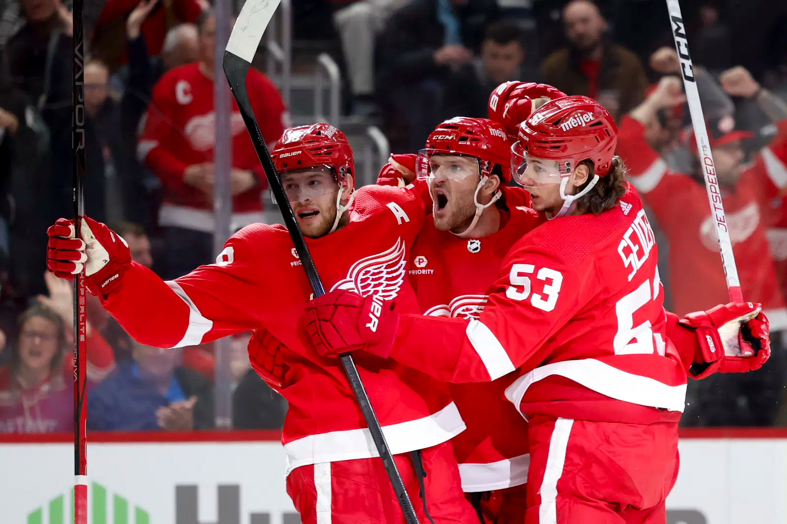
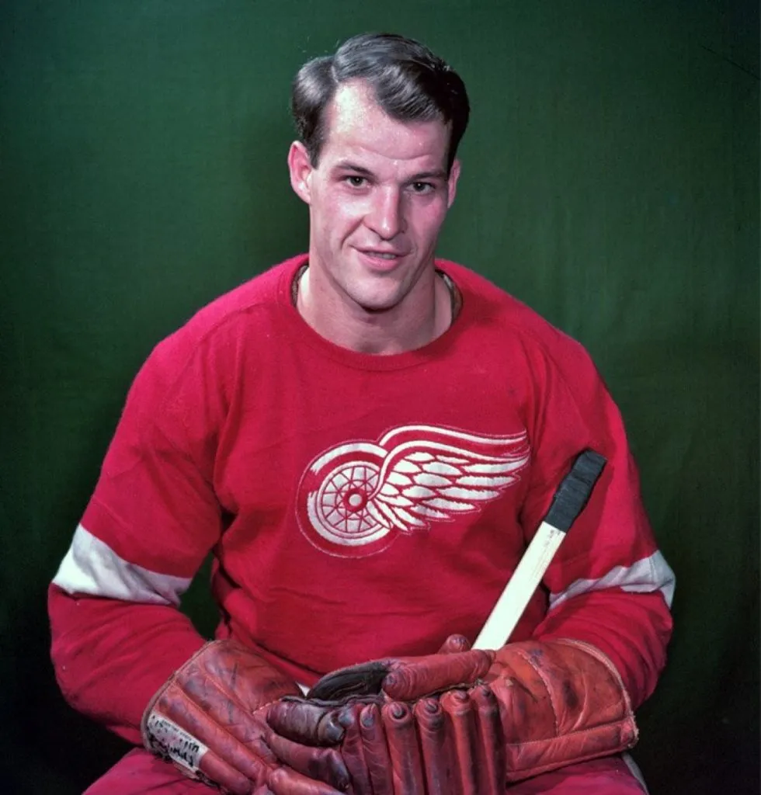
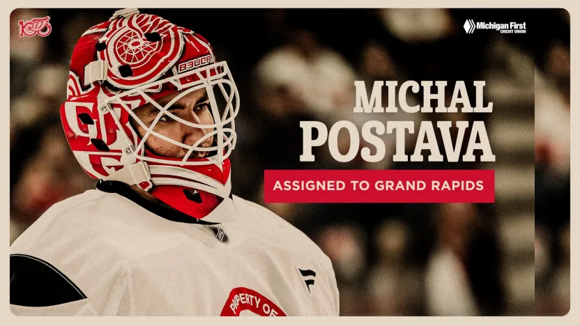
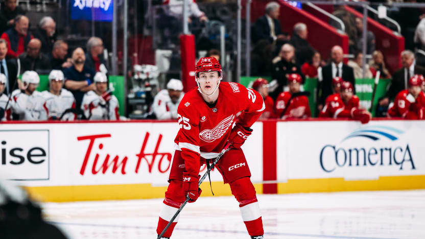
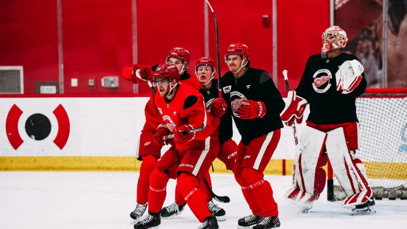

BEM VINDO AO
DETROIT RED WINGS
Fundado em 1926, o Detroit Red Wings é o time americano com mais títulos da Stanley Cup na história. A franquia é famosa pelo logotipo da "Roda Alada", que homenageia a importância da indústria automobilística da cidade de Detroit, e pela tradição única de torcedores jogarem polvos reais no gelo durante os playoffs.
O time viveu eras de dominância absoluta, como os anos 50 com Gordie Howe e a incrível sequência de 25 anos consecutivos classificando-se para os playoffs entre 1990 e 2016. Durante esse tempo, o "Russian Five" (os cinco jogadores russos que jogavam juntos) revolucionou o esporte com um estilo de jogo baseado em posse de disco e trocas de passes perfeitas.
Atualmente, sob o comando do ex-capitão e agora gerente geral Steve Yzerman, os Red Wings estão finalizando um longo processo de reconstrução. O time foca em uma mistura de veteranos consagrados e jovens talentos europeus, buscando trazer de volta o brilho da "Hockeytown" e lutar novamente pelo topo da Divisão Atlântica.
CONHEÇA OS
JOGADORES

Gordie Howe
Ala Direita
1946–1971
AGENDA
27
28
31
2
4
5
NOTÍCIAS

Red Wings designam Michal Postava para Grand Rapids.
O goleiro tem um histórico de 13 vitórias, 6 derrotas e 0 empates com os Griffins na temporada 2025-26.

Bernard-Docker está "muito animado" para finalizar o novo contrato de dois anos com o Red Wings.
O saldo positivo de +5 do defensor em 55 jogos nesta temporada iguala seu melhor desempenho na NHL.

Em meio a uma acirrada disputa por uma vaga no Wild Card e às vésperas de uma crucial sequência de três jogos fora de casa, o Detroit Red Wings se concentrou em encarar as coisas "um dia de cada vez".
Detroit enfrentará três times consecutivos da Divisão Metropolitana esta semana.